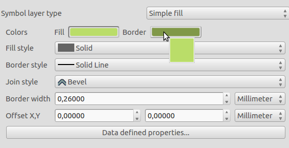
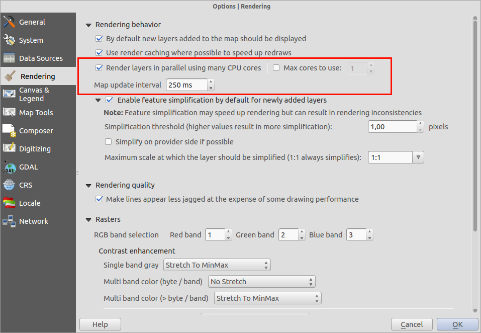
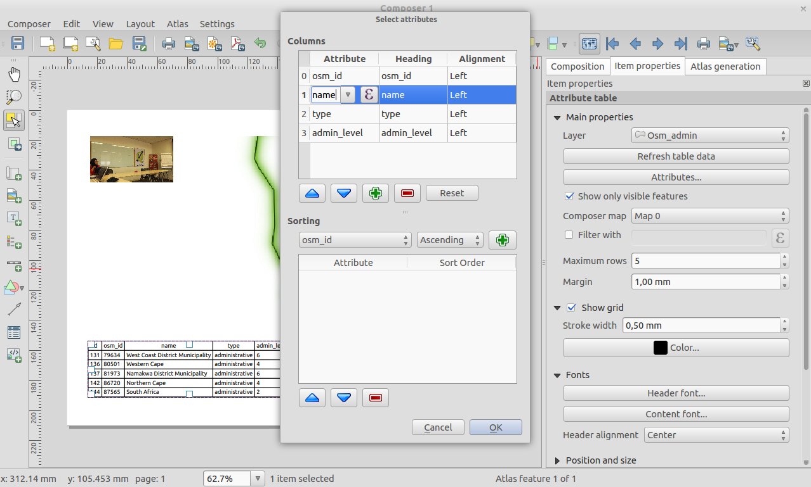
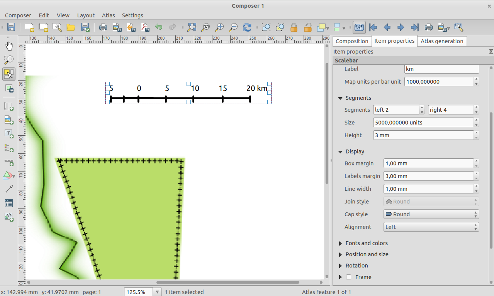
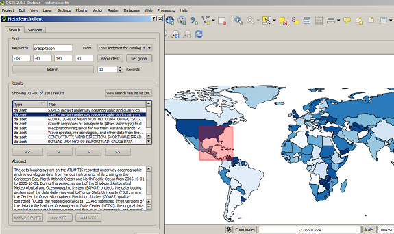
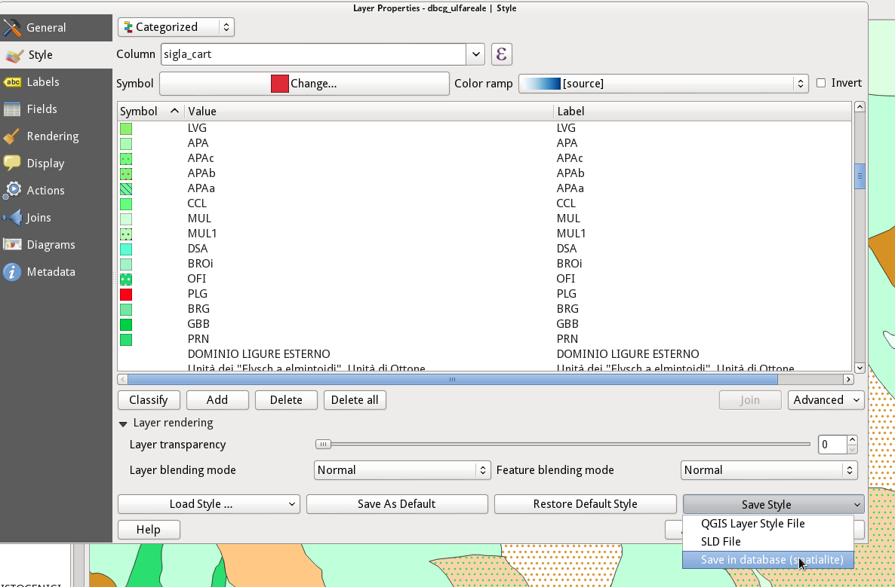

Log met wijzigingen voor QGIS 2.4¶
Log met wijzigingen voor de volgende uitgave van QGIS 2.4.0. De nadruk voor deze uitgave ligt meer op het oppoetsen en de uitvoering - we hebben vele nieuwe mogelijkheden, tweaks en verbeteringen toegevoegd om de gebruikersinterface meer consistent te maken en er professioneler uit te laten zien (en hopelijk eenvoudiger te gebruiken). Aan de Printvormgeving (gebruikt voor het maken van afdrukklare kaarten) is heel vele werk verricht om het een meer bruikbaar platform voor het maken van fantastische cartografische uitvoer te maken.
Wanneer aan software nieuwe mogelijkheden worden toegevoegd introduceren die de mogelijkheid tot het ontstaan van nieuwe problemen - als u in deze uitgave nieuwe problemen tegenkomt, vul dan een ticket in op de QGIS Bug Tracker.
We willen de ontwikkelaars, schrijvers van documentatie, testers en alle andere vele mensen bedanken die vrijwillig hun tijd en inspanningen bijdragen (of mensen ondersteunen om dat te doen).
From the QGIS community we hope you enjoy this release! If you wish to donate time, money or otherwise get involved in making QGIS more awesome, please wander along to qgis.org and lend a hand!
Tenslotte willen we onze officiële sponsoren bedanken voor de onschatbare financiële ondersteuning die zij aan dit project verlenen:
- GOUDEN sponsor: Asia Air Survey, Japan
- ZILVEREN sponsor: G.A.I.A. mbH, Duitsland
- ZILVEREN sponsor: Staat Vorarlberg, Oostenrijk
- BRONZEN sponsor: www.molitec.it, Italië
- BRONZEN sponsor: www.argusoft.de, Germany
- BRONZEN sponsor: www.openrunner.com, Frankrijk
- BRONZEN sponsor: www.eschenlaub.de, Duitsland
A current list of donors who have made financial contributions large and small to the project can be seen on our donors list.
If you would like to make a donation or sponsor our project, please visit our sponsorship page for details. QGIS is Free software and you are under no obligation to do so. Sponsoring QGIS helps us to fund our six monthly developer meetings, maintain project infrastructure and fund bug fixing efforts.
- Algemeen
- Mogelijkheid: Genereer bandnaam met NetCDF EXTRA_DIM
- Mogelijkheid: Schaal en verschuiving op rastergegevens toepassen
- Mogelijkheid: Snel veld voor veldberekening in attributentabel
- Mogelijkheid: Modi kleurvoorbeelden in Printvormgeving en kaartvenster
- Mogelijkheid: QLR QGIS-laagbestanden
- Mogelijkheid: Nieuwe functies voor expressies
- Mogelijkheid: Kleuren kopiëren, plakken en slepen en neerzetten
- Mogelijkheid: Multi-threaded renderen
- Labels
- Printvormgeving
- Mogelijkheid: Verbeteringen aan items Afbeelding in Printvormgeving
- Mogelijkheid: Modus vooraf gedefinieerde schalen voor kaarten in Atlas
- Mogelijkheid: Verbeterde attributentabellen in Printvormgeving
- Mogelijkheid: Algemene verbeteringen van Printvormgeving
- Mogelijkheid: Verbeteringen aan HTML-frames
- Plug-ins
- Symbologie
Algemeen¶
Mogelijkheid: Genereer bandnaam met NetCDF EXTRA_DIM¶
De NetCDF verschafte extra dimensionele informatie. Deze informatie verschaft metadata over elke band. Deze metadata kan worden gebruikt om de de naam van elke band te verklaren. Bijvoorbeeld: de banden van een bestand van NetCDF geven de temperatuur op enen bepaalde diepte weer. Voor de gebruikers is het eenvoudiger een band te selecteren met informatie over de diepte, in plaats van alleen het nummer van de band.

Mogelijkheid: Schaal en verschuiving op rastergegevens toepassen¶
In sommige gegevensbronnen voor rasters, worden gegevens opgeslagen als integer met een schaal en een verschuiving in de metadata. De schaal en verschuiving kunnen worden gebruikt om de juiste gegevens op te halen. QGIS past dat toe op de rastergegevens om de gebruikers de juiste informatie te verschaffen voor legenda, histogram en identificatie.

Mogelijkheid: Snel veld voor veldberekening in attributentabel¶
We hebben een fantastische nieuwe mogelijkheid voor hen die werken met berekende velden in attributentabellen voor vectoren. De nieuwe snelle balk voor veldberekening laat u nel en eenvoudig de waarden in een kolom van de attributentabel bij te werken.

Mogelijkheid: Modi kleurvoorbeelden in Printvormgeving en kaartvenster¶
Een echt innovatieve mogelijkheid die is toegevoegd aan 2.4 is ondersteuning voor voorbeelden voor grijswaarden en voor kleurenblindheid. Dit stelt u in staat te visualiseren hoe mensen met kleurenblindheid uw cartografie en kaartlay-out zullen zien, of hoe uw kaart er uit zal zien als hij in grijswaarden wordt afgedrukt. U kunt hier meer over deze mogelijkheid .

Mogelijkheid: QLR QGIS-laagbestanden¶
Toegevoegde ondersteuning voor bestanden van QGIS Layer Definition of eenvoudigweg QLR (zie http://nathanw.net/2014/03/12/qgis-qlr/). QLR-bestand is een bestand dat wijst naar de gegevens, bevat alle opmaak en andere informatie. U hoeft dan slechts alleen dit bestand toe te voegen en het zal alle magie voor u uitvoeren. QLR maakt het eenvoudiger om dezelfde laag toe te voegen aan meerdere kaartdocumenten, erven van alle eigenschappen die worden ingesteld en werken met alle door QGIS ondersteunde lagen, uitgezonderd spaciale lagen voor plug-ins.
Mogelijkheid: Nieuwe functies voor expressies¶
We hebben enkele nieuwe functies beschikbaar in de Expressiebouwer.
- begrenzingsvakken (grenzen)
- begrenzingsvak breedte & hoogte (grenzen_breedte/grenzen_hoogte)
- min/max x/y coórdinaten (xmin/xmax/ymin/ymax)
- nieuwe functie tekstdoorloop die een tekenreeks teruggeeft met een maximum/minimum aantal tekens

Mogelijkheid: Kleuren kopiëren, plakken en slepen en neerzetten¶
U kunt nu kleuren kopiëren, plakken en slepen en neerzetten tussen elk widget voor invoer in QGIS. Bekijk dit artikel voor meer informatie over hoe deze nieuwe mogelijkheid werkt. Hex-kleurcodes en RGB-strings kunnen ook op de kleurknoppen worden geplakt om het importeren van die kleuren van buiten QGIS mogelijk te maken.

Mogelijkheid: Multi-threaded renderen¶
Dit is een mogelijkheid die we eenvoudigweg niet tot zijn recht kunnen,laten komen met slechts één schermafdruk - QGIS ondersteunt nu multi-threaded renderen! Wat dit betekent is dat bij het tekenen van de kaart, QGIS het tekenwerk verdeelt over alle cores in uw CPU, wat het proces efficiënter en reageert beter. Met reageert beter bedoelen we dat u niet langer hoeft te wachten met het bijwerken van de kaartweergave voordat u opnieuw kunt pannen en zoomen. De kaartweergave wordt ook meermalen bijgewerkt wat u in staat stelt te zien of de kaart juist is gepositioneerd, vroeg in het proces van tekenen. Bekijk dit artikel voor een meer gedetailleerd overzicht van het systeem voor multi-threaded renderen. U vindt in het dialoogvenster voor de instellingen van QGIS enkele opties die u in staat stellen het gedrag van het multi-threaded renderen te beheren.

Labels¶
Mogelijkheid: Objecten meerdere malen labelen¶
Lange lijnen (zoals contourlijnen of wegen) kunnen nu herhaald worden gelabeld met regelmatige intervallen. men kan kiezen tussen mm en kaarteenheden voor het specificeren van de interval voor de herhaling. Op het moment van de uitgave is er nog steeds een probleem met de instelling “Aan elkaar verbonden lijnen samenvoegen om labelduplicaten te voorkomen”.

Printvormgeving¶
Mogelijkheid: Verbeteringen aan items Afbeelding in Printvormgeving¶
Het item Afbeelding in Printvormgeving is nu ‘Atlas vriendelijk’ - u kunt een expressie om te definiëren welke afbeelding gebruiken die zou moeten weergeven voor elke pagina van de Atlas. U kunt nu ook de modus Formaat wijzigen (zoomen, clippen, uitrekken etc.) voor de afbeelding in relatie tot de grootte van zijn frame en de dimensies. U kunt ook de plaatsing van de afbeelding specificeren relatief ten opzichte van het frame met behulp van het nieuwe item Plaatsing.

Mogelijkheid: Modus vooraf gedefinieerde schalen voor kaarten in Atlas¶
U kunt nu een vooraf gedefinieerde schaal definiëren voor de kaart bij het werken met items voor een Atlas. Het zal de optie Best passend gebruiken uit de lijst van vooraf gedefinieerde schalen in de instellingen van de eigenschappen van uw project (zie Project –> Projecteigenschappen –> Algemeen –> Projectschalen om deze vooraf gedefinieerde schalen te configureren).

Mogelijkheid: Verbeterde attributentabellen in Printvormgeving¶
We hebben een aantal verbeteringen gemaakt aan de mogelijkheid om attributentabellen weer te geven in uw lay-outs van Printvormgeving:
- Voor het opnieuw ordenen van kolommen binnen een tabel is ondersteuning toegevoegd
- Ondersteuning toegevoegd voor op expressies gebaseerde kolommen
- U kunt nu de uitlijning van individuele tabelkolommen instellen, en ook de uitlijning specificeren voor de kopcellen van de tabel
- Inhoud van de tabel kan worden gefilterd door een expressie

Mogelijkheid: Algemene verbeteringen van Printvormgeving¶
Er zijn een aantal toevoegingen aan Printvormgeving om het leven wat aangenamer te maken bij het werken in de modus Lay-out:
- Knop toegevoegd om het bereik van het huidige kaartitem te bekijken in het kaartvenster
- Mogelijkheid om SVG-afbeeldingen te exporteren vanuit Printvormgeving met lagen
- Lijn samenvoegen en eindstijlen voor schaalbalken instellen
- Ondersteuning voor de stijl voor het samenvoegen van lijnen voor items Frames

Mogelijkheid: Verbeteringen aan HTML-frames¶
HTML-frames in de Printvormgeving zijn verbeterd. Er is een nieuwe knop Frame toevoegen die kan worden gebruikt om handmatig meerdere gekoppelde frames te maken. We hebben ook onze logica voor pagina-einden verbeterd wat de kans vermindert dat u pagina-einden krijgt die midden door tekstregels lopen bij het pagineren van HTML-frames.

Plug-ins¶
Feature: Plug-in MetaSearch Catalogue Client¶
MetaSearch is een plug-in voor QGIS om interactief te werken met metadata catalogus services, die de standaard OGC Catalogue Service voor het web (CSW) ondersteund. Deze plug-in verschaft een eenvoudige en intuïtieve benadering en gebruikersvriendelijke interface om catalogi voor metadata binnen QGIS te doorzoeken en is nu standaard opgenomen in het bronproduct van QGIS.

Symbologie¶
Mogelijkheid: Stijl Shapeburst-vulling¶
We hebben een fantastische nieuwe renderer in QGIS 2.4. De renderer Shapeburst zal u in staat stellen polygonen te vullen met een kleurverloop dat zich uitstrekt van de lijnrand tot in het interieur van de polygoon. U kunt hier meer lezen over shapeburst.

Feature: Optie om plaatsing van markeringslijnen te verplaatsen¶
Bij het gebruiken van een markeringslijn langs een rand van een lijn of polygoon, kunt u nu een verschuiving specificeren zodat de markeringslijn begint op een ingestelde afstand vanaf het begin van de lijn. Als een markeringslijn wordt ingesteld op de modus “alleen op eerste hoekpunt” of “alleen op laatste hoekpunt”, dan zal deze verschuiving beheren hoe ver langs de lijn vanaf het hoekpunt de markering wordt geplaatst.

Mogelijkheid: Nieuwe renderen geïnverteerd polygoon¶
Een nieuwe renderer is toegevoegd voor objecten Polygoon, welke u in staat stelt alles op te maken buiten uw polygonen. Dit kan nuttig zijn voor het accentueren van gebieden, of voor het maken van cartografische maskers. Indien gebruikt met de nieuwe stijl Shapeburst, kunt u nu uitvoer maken zoals weergegeven in de afbeelding voor dit item.
Opmerking: De nieuwe versie van plug-in masker helpt om eenvoudig maskerlagen te maken uit de huidige selectie, label-objecten alleen in deze gebieden, en een automatisch masker te maken bij het genereren van een Atlas.

Mogelijkheid: Stijlen met Spatialite-lagen opslaan en ophalen¶
In de vorige versie was het mogelijk om stijlen op te slaan met lagen in Postgres, nu is dat ook mogelijk voor lagen van Spatialite. Deze functie maakt het mogelijk verschillende lagen in te bedden in een container van Spatialite, wat het delen van gegevens vereenvoudigt en ook hun presentatie. Een videohandleiding voor deze functionaliteit kan hier http://pvanb.wordpress.com/2014/05/15/saving-layer-styles-to-your-spatialite-database/ worden gevonden
